個人で作っているアプリ
企画・デザイン・開発まで1人で作っています。新しいアプリはここに足していきます。
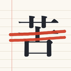
ニガテ帳
国家試験の過去問・管理栄養士 / 臨床検査技師 / 理学療法士
間違えた問題だけが「苦手」として残り、2回続けて正解すると消える過去問アプリです。各試験5年分1,000問と全問解説。本番の予想点と科目ごとの正答率も毎日わかります。直近1回分は無料、完全版は買い切り。
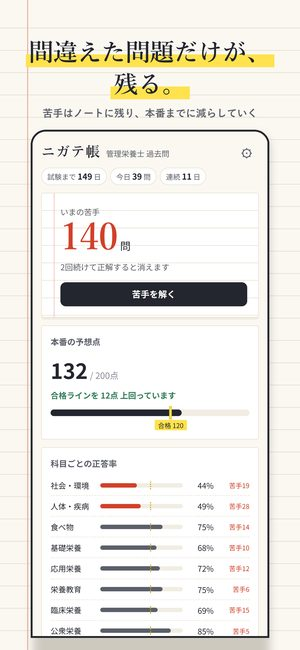
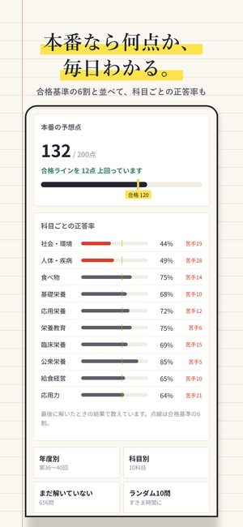
iPhone 公開中(管理栄養士・臨床検査技師)
Android テスト中
Android 版のテストに参加してくれる方を探しています(3本共通)。
- テスター用のグループに参加する
- テスト参加ページで「テスターになる」を押し、Google Play から入れる:管理栄養士 / 臨床検査技師 / 理学療法士
DIAMOND NINE
野球シミュレーション・無料
選手を集めて、育てて、打線を組んで、1年を進める。弱小チームから優勝を目指す野球シミュレーションです。打率・本塁打・打点・OPS まで、成績表をずっと眺めていられます。
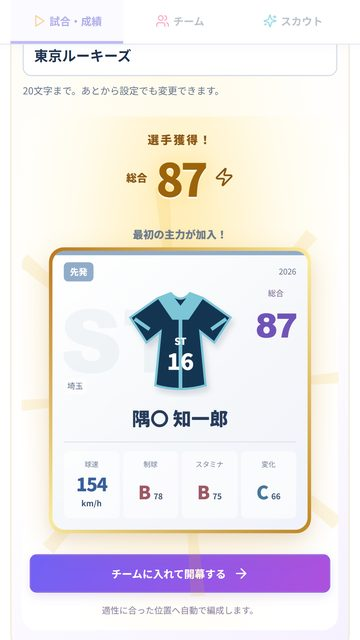
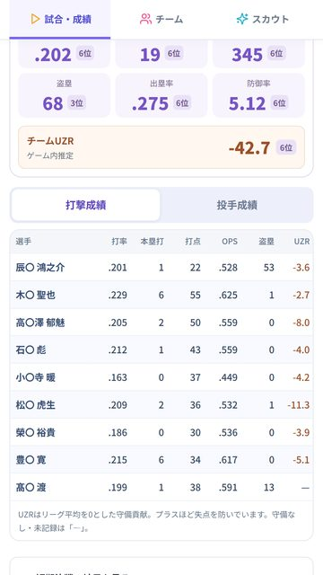
Android テスト中
iPhone 準備中
いまは Android 版のテスト中です。参加してくれる方を探しています。
- テスター用のグループに参加する(Google アカウントで1回押すだけ)
- テスト参加のページで「テスターになる」を押し、Google Play から入れる
カチマケ
パチンコ・パチスロ・競馬・競輪・ボート・オートの収支管理
投資と回収を入れるだけで、今月いくら勝って、どこで負けているかが分かる収支アプリです。貯玉・貯メダルやイベント日の印にも対応。勝った月は画像でシェアできます。
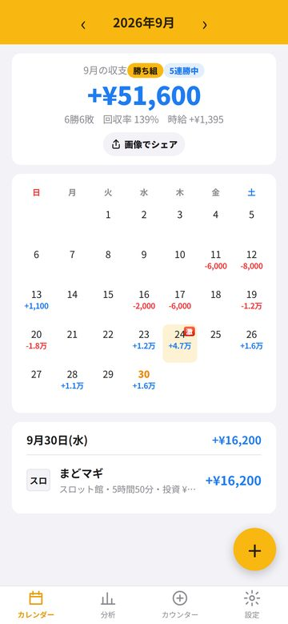
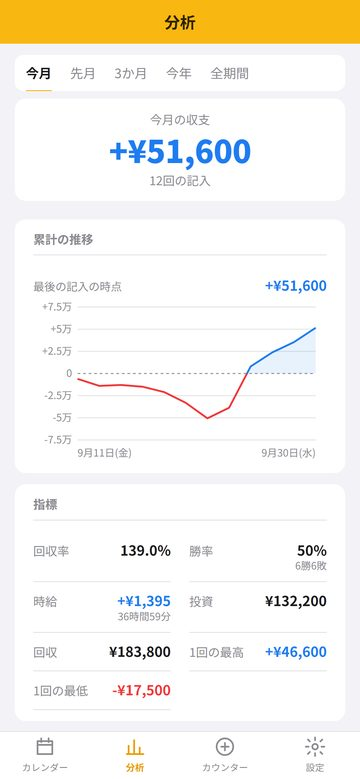
Android テスト中
iPhone 準備中
18歳以上向け
公開されたら、ここにストアへのリンクを置きます。
新しく作ったアプリ(Android テスト中)
どれも広告なしで、記録は端末の中だけに残ります。テストに参加してくれる方を探しています。
- タベドキ賞味期限と冷蔵庫の管理。期限が近い順に並びますテストに参加
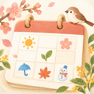
ひよりごよみスタンプで貼るカレンダー。アカウント登録なしテストに参加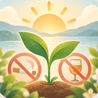
やめ日和 お酒禁酒・断酒を続けた日数と浮いたお金の記録テストに参加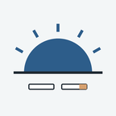
やめ日和 たばこ禁煙を続けた時間と吸わなかった本数の記録テストに参加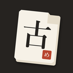
こぶんめくり大学受験の古文単語601語を、古典の例文で覚えるテストに参加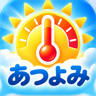
あつよみ暑さ指数と熱中症アラートテストに参加- 介護ニガテ帳介護福祉士国家試験の過去問750問。間違えた問題だけが残りますテストに参加
- ネガイロフィルム・使い捨てカメラ・平成デジカメ風に撮れるカメラ。日付入りテストに参加
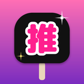
うちわキラリ推しの名前を入れるだけで、うちわ文字を原寸で作れるテストに参加
先にテスター用のグループに参加してから、各アプリの「テストに参加」を開いてください。